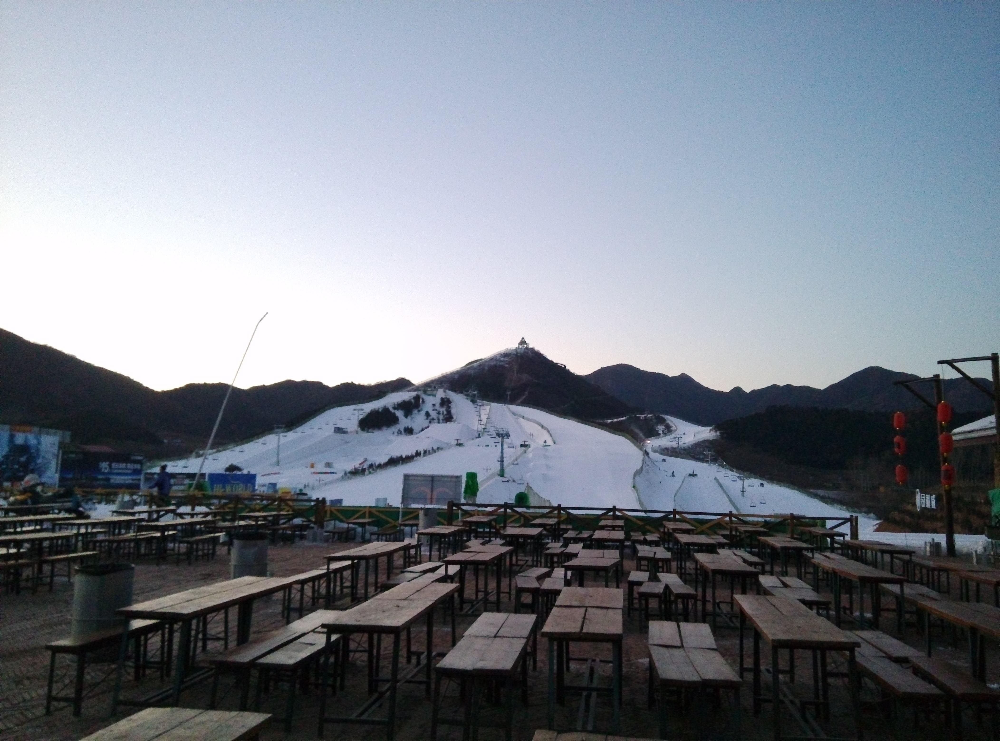

[转寄/推荐][转贴][删除][修改][设置可RE属性][上一篇][返回讨论区][下一篇][回文章][同主题列表][同主题阅读][从这里展开]
发信人: WiniM(WiniM), 信区: outdoor 标 题: 2015冬训总结 文颖 发信站: 饮水思源 (2015年03月03日09:15:30 星期二) 冬训总结 文颖 在火车上经过了15个小时，我们一行人到了北京。 由于灵山没雪，我们把场地转移到了南山滑雪场（作为一个来自热带的人，我第一次看见 雪）。在滑雪场上，我们学会了使用冰爪在雪地上行走，学会了在雪坡上建立保护站，学 会了滑坠制动，练习了结组行走。不幸的是我没有在意别人的建议：滑坠制动时脚一定离 地，结果在雪坡上扭到了脚。 回到密云休整了一天之后，我们出发去天池峡谷。我们爬了冰壁和冰坡。在冰坡上我们练 习了打保护点，单手打双套和拆除保护点。在冰壁下我重温了帮人打保护，而且攀冰一次 比一次熟练。而每踢三次冰必会自动调整长度的冰爪，让我们学会了熟练地穿脱冰爪。在 湿巾都全部结冰的帐篷里，在“一切从简”的食物中，在沉重的登山包下，处处体现了冬 训队伍的团队精神。 以下是我反省自身的不足： 1. 在练习滑坠制动的时候，我的手臂力量不足以稳住冰镐，或者把冰镐固定在肩下，导致 很多次都是到雪坡下才停住。 2. 在攀冰的时候，当我把两个冰镐都打到冰壁里，然后一只脚踢冰并且固定住之后，我的 另外一只脚准备踢冰时，我很难稳住，因为这个时候相当于一只脚在做半蹲，而且当冰镐 打得不稳时，脚上就会承受几乎整个身体的重量，这时就比较辛苦。我在这种情况下掉过 几次，难为帮我打保护的同学了。 3. 在冰坡上，我打双套的时候，经别人检查，我有几个锁都忘记把锁扣旋上。我承认很多 时候（比如攀岩、速降）我会忘记处理，这一点我以后要多注意。 最后上图： 南山滑雪场  screen.width - 200){this.width = screen.width - 200}"> |
[转寄/推荐][转贴][删除][修改][设置可RE属性][上一篇][返回讨论区][下一篇][回文章][同主题列表][同主题阅读][从这里展开]